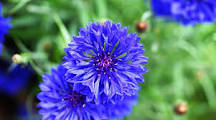

|  | Blue can be a difficult color to find naturally occurring in flowers. Luckily big blooms like Hydrangea offer light, sky-blue petals and Irises can blossom in classic, royal-blue. Traditionally, an emblem of peace and calm, blue can bring some serenity to your backyard. |